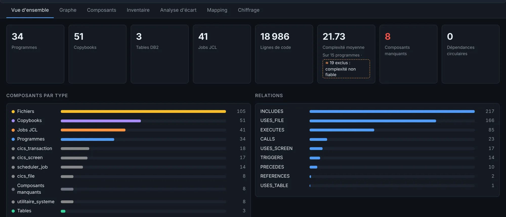
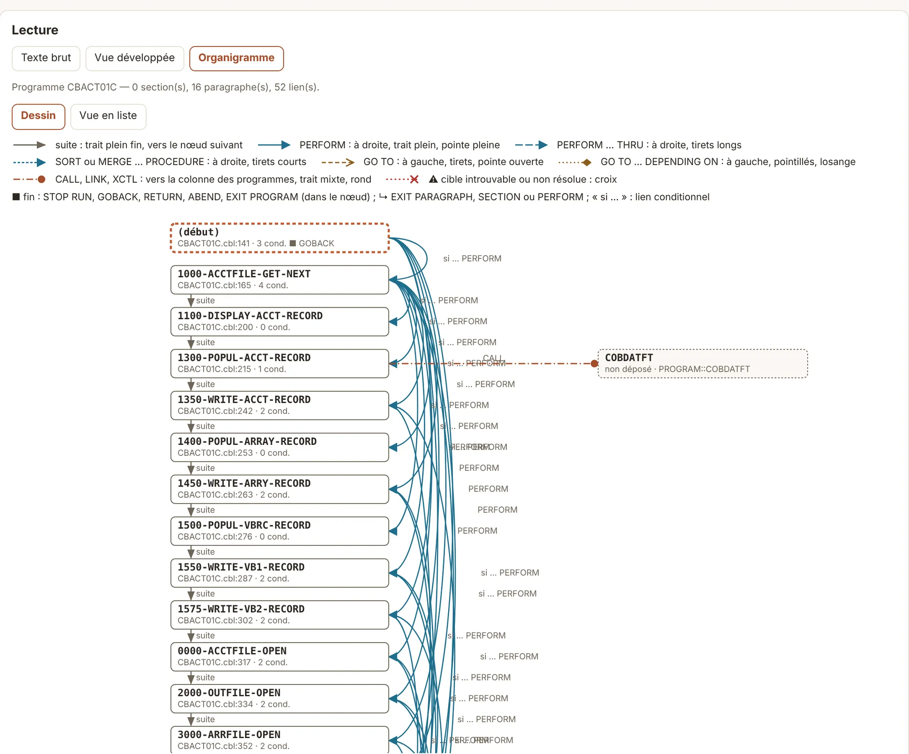
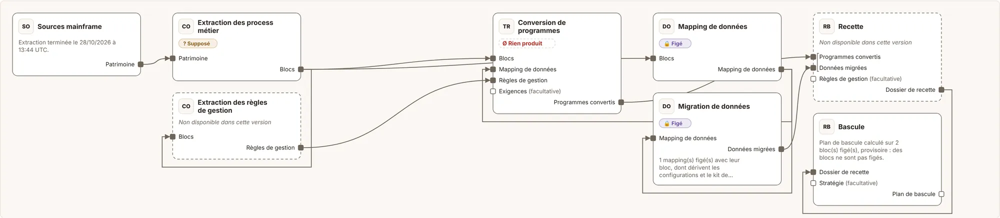

LegaDrift à l'œuvre sur une vraie application COBOL
Toutes les images de cette page viennent de l'outil, lancé sur AWS CardDemo : une application de cartes bancaires en COBOL, CICS et JCL, publiée par AWS sous licence Apache-2.0. Aucune donnée client, aucun chiffre ajouté à la main.
Ce que vous faites avec LegaDrift, dans l'ordre
Cliquez une capture pour la voir en grand.
Déposez les sources
Vous déposez le code tel qu'il sort du mainframe : programmes, copybooks, JCL, définitions Db2 et CICS, export de l'ordonnanceur. LegaDrift compte ce qu'il a lu et nomme ce qui manque.
Sur CardDemo : 34 programmes, 51 copybooks, 41 jobs JCL, 18 986 lignes. Huit composants sont appelés sans que leur source ait été fournie : ils sont signalés, pas ignorés.


Voyez comment tout s'enchaîne
Chaque programme, job, fichier et table devient un point du graphe ; chaque lien vient d'une ligne de code. Un clic sur un programme affiche sa fiche et tout ce qu'il touche.
Ici CBTRN02C : 619 lignes, ses fichiers et ses copybooks. Les appels que l'analyse n'a pas su résoudre sont marqués comme tels, avec leur nombre.

Comprenez chaque programme
Pour chaque programme, vous lisez le texte d'origine, la vue développée (copybooks et procédures remis à leur place) et l'organigramme tiré du code : paragraphes, enchaînements, appels.
L'organigramme de CBACT01C montre ses 16 paragraphes et un appel vers COBDATFT, dont la source n'a pas été déposée. Chaque case renvoie à son numéro de ligne.


Choisissez une ou plusieurs cibles
Vous choisissez la cible : Java, .NET, un mainframe modernisé. LegaDrift liste ce qui ne passera pas tel quel et, pour chaque écart, les lignes qui le prouvent et la piste pour le traiter.
Vers Java et PostgreSQL : 154 écarts, dont 7 sur le décimal condensé (COMP-3), 8 sur des GO TO et 39 JCL à réécrire. CBSTM03A, par exemple, utilise 14 fois GO TO : chaque ligne est citée.

Une personne valide, puis fige
Les composants sont regroupés en blocs fonctionnels, un par traitement métier. Un valideur accepte chaque bloc, avec ou sans réserve, puis le fige : sa version ne change plus.
Ce qui est prouvé par le code reste séparé de ce qui est supposé. Chaque décision porte un nom, une date et une empreinte, inscrits au registre des actes.

Composez le projet de migration
Le projet se construit comme un plan, brique par brique : des sources jusqu'à la bascule, en passant par la conversion des programmes, la migration des données et la recette. Chaque brique dit ce qu'elle consomme, ce qu'elle produit et ce qui lui manque encore.


Ce que cette démonstration ne montre pas
Elle tourne sans modèle d'IA et sans moteur de conversion branché. Les explications en langage métier, les réponses aux questions et la conversion du code n'y apparaissent donc pas : ces deux choix se font avec vous, pour votre projet, et sont consignés. Tout ce que vous voyez ici vient des analyseurs.
Voir LegaDrift sur votre propre patrimoine ?
Nous préparons nos premiers projets pilotes. Parlons de votre contexte.